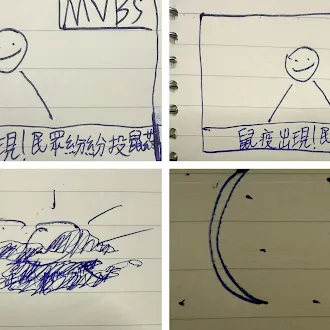
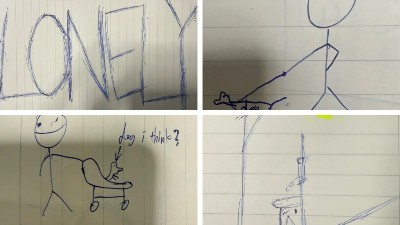
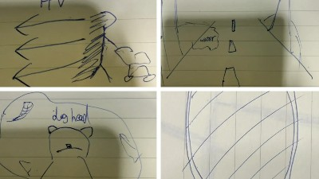
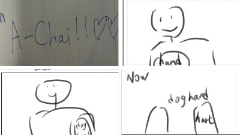
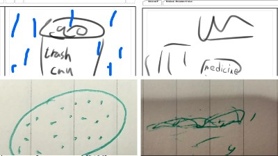
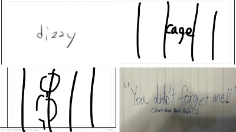
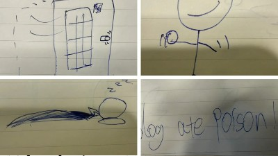
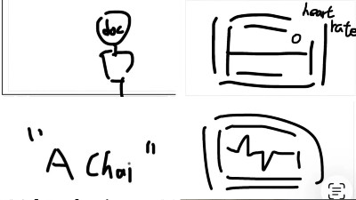

(3).gif) Charlize
Charlize
Production Journal
Production Journal
What Went Well:
Filming
We didn't run into any problems because the way we choose our script is by voting in our group,
so all of us agreed with the script and agreed to play by the script.
Skills Learned:
Acting
Filming
Editing
Reflection:
In this process of making a short video of stray dogs, I’ve learned Skill of filming and video
editing, also skills in drawing storyboard and doing animatics.
script
Night after night passes.
The sunlight shines on my dirty fur.
The streetlights keep me warm at night.
Everything is quiet.
So lonely.
Did you abandon me?
On the street, when I see dogs with owners,
I can’t even lift my head.
Even though I cannot speak,
you can still see my jealousy.
I once had a home.
When did my life become like this?
I look at my reflection in the water,
and remember the mirror in my old home.
My memory is not very good,
but I still remember my name:
“Good Boy.”
I was good at shaking hands
and spinning in circles.
My owner used to smile and pat my head.
I loved sleeping beside his feet.
Back then,
I thought happiness would last forever.
But the happy memories slowly fade away,
and I return to reality.
I look at the painful wounds on my paws.
Now, my paws can do nothing.
I cannot even find food.
I was so hungry.
The rain slowly began to fall.
Cold drops hit my body.
No one wanted to come near me.
People covered their noses
and hurried past me.
“…Why does this food smell so strong?”
After eating, I slowly collapsed onto the ground.
“I’m so sleepy…”
When I opened my eyes again,
the familiar streets were gone.
Instead, there was only an old cage.
People called this place a shelter.
There were many dogs like me here.
Some barked nonstop,
while others quietly hid in corners.
Every day, people came to look at us.
But most only glanced at me
before turning away.
I wagged my tail as hard as I could.
Even though my body hurt,
I still wanted someone to take me home.
Then one day,
a familiar figure appeared.
“Good Boy!”
I jumped toward him happily.
So…
you did not forget me.
I was finally taken home again
by my original owner.
I thought everything would begin again.
Until that day.
I could not see clearly what it was.
I only smelled something strange.
“A dog ate poison!” someone shouted.
When I opened my eyes again,
the streets were gone.
The doctors tried hard to save me.
The lights were painfully bright.
I could hear hurried footsteps everywhere.
But maybe my life no longer had meaning.
My heartbeat stopped.
Only one cold sound remained:
“Beeeeeeep—”
“Good Boy!”
That familiar voice suddenly brought me back.
The machine showed that I was alive again.
But that was only my imagination.
The last thing I saw
was my owner crying.
If I could choose again,
I would still want to be your dog.
But this time,
please do not let go of me again.
“Taking care of a dog needs more than love.
It also needs responsibility.”
“Please do not abandon a dog
that once trusted you.”
Owner:will
Two strangers with dog:kailyn, cha
Camera:will
Edit: Kailyn
Doctor: Will
People who come to see the dog:cha
shot list
| Shot | Scene | Role | Angle | Stuff | Sound |
|---|---|---|---|---|---|
| 1 | TV | Will | Straight-on Angle | TV | TV sound |
| 2 | Street | None | High-angle Shot | Sky | Sun |
| 3 | Street | None | High-angle Shot | Sky | Night |
| 4 | Street | Kai | High-angle Shot | Leash | Dog sound, Car |
| 5 | Street | Cha | High-angle Shot | Cart | Dog sound, Car |
| 6 | Street | None | High-angle Shot | Water | Dog sound, Car |
| 7 | Street | None | Low-angle Shot | Water, Dog | Dog sound, Car |
| 8 | Home | None | Straight-on Angle | Dog, Collar, Mirror | Owner sound, Happy sound |
| 9 | Home | Will | High-angle Shot | Dog's Toy | Owner sound, Happy sound, Dog sound |
| 10 | Home | Will | High-angle Shot | Dog's Toy | Owner sound, Happy sound, Dog sound |
| 11 | Street | None | Low-angle Shot | Dog's Hand (Hurt) | Dog sound, Car, Sad sound |
| 12 | Trash Can | None | Low-angle Shot | Trash Can | Dog sound, Car, Sad sound, Trash can sound |
| 13 | Street | None | High-angle Shot | None | Dog sound, Car |
| 14 | Eat Medicine | None | Low-angle Shot | Medicine | Dog sound, Car, Eat sound |
| 15 | Cage | None | High-angle Shot | Cage | Dog sound |
| 16 | Cage | Cha | High-angle Shot | Cage | Dog sound |
| 17 | Cage | Will | High-angle Shot | Cage | Dog happy sound |
| 18 | Home | Will | High-angle Shot | Dog's Toy | Owner sound, Happy sound, Dog sound |
| 19 | Home | Will | High-angle Shot | Bed | Owner sound, Happy sound, Dog sound |
| 20 | Hospital | Will | High-angle Shot | Light, Hospital | Heart rate sound |
| 21 | Hospital | None | Straight-on Angle | Heart Rate Machine | Heart rate sound |
story board







